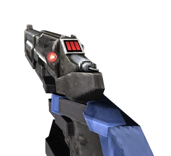
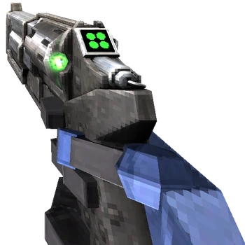
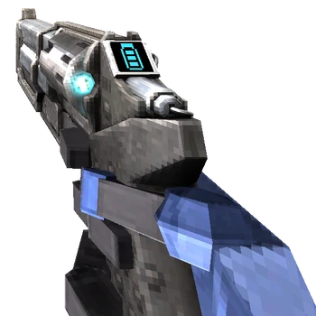

In ultrakill we have 3 revolvers
The Piercer Revolver is the first gun found in ULTRAKILL and is the blue variant of the Revolver, obtained in [ 0-1: INTO THE FIRE ]. It can deal moderate amounts of damage with its primary fire and can pierce through multiple weak targets or inflict concentrated damage on single targets with its secondary fire.
The Marksman Revolver is the green variant of the Revolver, and gives V1 the ability to toss coins into the air. It can be bought at the Terminal for 7,500P after obtaining the Piercer Revolver in [ 0-1: INTO THE FIRE ].
The Piercer Revolver is the first gun found in ULTRAKILL and is the blue variant of the Revolver, obtained in [ 0-1: INTO THE FIRE ]. It can deal moderate amounts of damage with its primary fire and can pierce through multiple weak targets or inflict concentrated damage on single targets with its secondary fire.
